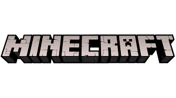

O minecraft foi fundado por Markus Persson, um programador sueco e bilionário, o jogo foi lançado em 2009
Um jogo eletrônico sandbox de sobrevivência, os jogadores exploram um mundo aberto tridimensional intencionalmente em blocos, pixelizado e gerado proceduralmente, podendo descobrir e extrair matérias-primas, ferramentas artesanais, construir estruturas ou terraplenagens, o modo sobrevivência, no qual o jogador precisa adquirir recursos para construir o mundo e se manter vivo, e um modo criativo, onde os jogadores têm recursos ilimitados. modo sobrevivência, no qual o jogador precisa adquirir recursos para construir o mundo e se manter vivo, e um modo criativo, onde os jogadores têm recursos ilimitados.